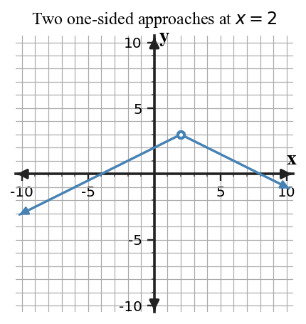

Limits from Graphs and Tables
Core idea: A finite two-sided limit exists only when the left-hand and right-hand limits agree.
You will compare graphical and numerical evidence and use calculator tables as a check.
Learning Target
Determine one-sided and two-sided limits from graphs and tables, including when a limit does not exist.
I can statements
- I can determine one-sided and two-sided limits from graphs and tables, including when a limit does not exist.
- I can compare graphical and numerical estimates of the same limit.
- I can use calculator-supported tables as a check on graphical reasoning.
Vocabulary / Key Notation Preview
- left-hand limit
- right-hand limit
- two-sided limit
- DNE
Skim the terms now. Add meaning as each term is introduced in the notes.
What's To Come
This is a long-range preview for this section. Do not solve it yet. Circle anything familiar, underline symbols, labels, conditions, data, or features that seem important, and write short notes about what you think may matter later.

As $x$ approaches 3, compare the height approached from the left with the height approached from the right. What does that comparison suggest about $\lim_{x\to3}f(x)$?
Teaching note: Preview only: ask students to trace the graph toward $x=3$ separately from the left and right and record what looks familiar about the two approach heights. Do not state the two-sided conclusion yet.
Content: Read, Represent, Annotate, Apply
Directions
Read in short chunks. Annotate the prose and representations together. Mark evidence, conditions, important quantities, labels, patterns, and questions.
Reading 1: Direction Matters
A left-hand limit, written $\lim_{x\to a^-}f(x)$, follows inputs less than $a$ as they move toward $a$. A right-hand limit, written $\lim_{x\to a^+}f(x)$, follows inputs greater than $a$.
A finite two-sided limit can exist only when both one-sided limits exist and approach the same finite number. When the one-sided limits approach different values, the two-sided limit is reported as DNE (does not exist), even if a function value is plotted at the target.

Stop and Discuss
- How do the superscripts $-$ and $+$ change which nearby inputs you follow?
- Compare the WTC jump with the generated model. What graphical evidence distinguishes disagreement from agreement?
Teaching note: Expected evidence: $a^-$ means inputs less than $a$; $a^+$ means inputs greater than $a$. In the WTC the sides approach different heights; in the generated model they approach the same height.
$\lim_{x\to a^-}f(x)=L_-$
Approach from inputs less than $a$.
$\lim_{x\to a^+}f(x)=L_+$
Approach from inputs greater than $a$.
If $L_-=L_+=L$, then $\lim_{x\to a}f(x)=L$.
Example 1: Compare One-Sided Graph Limits
From a graph, $f(x)$ approaches 2 as $x\to1^-$ and 5 as $x\to1^+$. State both one-sided limits and the two-sided limit.
Teacher answer:
$\lim_{x\to1^-}f(x)=2$, $\lim_{x\to1^+}f(x)=5$, so $\lim_{x\to1}f(x)$ DNE.You Try It 1: Read a Second Jump from Both Sides
A graph approaches -1 from the left and 3 from the right at $x=4$. State the one-sided and two-sided limits.
Teacher answer:
$\lim_{x\to4^-}f(x)=-1$, $\lim_{x\to4^+}f(x)=3$; the two-sided limit DNE.Reading 2: Numerical Evidence Must Approach from the Correct Side
In a table, the side is determined by the input values, not by the order in which rows or columns are displayed. Values less than $a$ represent a left-hand approach; values greater than $a$ represent a right-hand approach. A two-sided numerical estimate needs evidence from both directions.
A calculator-generated table can provide efficient numerical evidence and can check a graphical estimate. It is still evidence from sampled inputs, not a proof of a theorem-level conclusion. Also, an undefined function value at $x=a$ does not by itself prevent nearby values from approaching a common limit.
Stop and Discuss
- If a table contains only $x\gt a$, which one-sided limit can it estimate directly?
- Why can an undefined value at $x=a$ coexist with a finite two-sided limit?
Teaching note: Expected reasoning: inputs greater than the target estimate the right-hand limit. The point value is not needed for a limit estimate because limits use nearby behavior.
| Input pattern | Direction represented |
|---|---|
| $x\lt a$ and $x$ increases toward $a$ | left-hand |
| $x\gt a$ and $x$ decreases toward $a$ | right-hand |
| both patterns | possible two-sided evidence |
Example 2: Estimate a Limit When the Point Is Missing
The table approaches 6 from both sides of $x=2$, but $f(2)$ is blank. What can you conclude about the limit?
Teacher answer:
The numerical evidence supports $\lim_{x\to2}f(x)=6$; a missing point value does not by itself make the limit DNE.You Try It 2: Use a Calculator Table as Evidence
A calculator table approaches -4 from both sides of $x=-3$, while the function is undefined at -3. What conclusion is supported?
Teacher answer:
$\lim_{x\to-3}f(x)=-4$ is supported; the function value is not needed to estimate the limit.Example 3: Identify the Side Represented by a Table
A table uses inputs only larger than 5. Which limit can it directly estimate: left-hand, right-hand, or two-sided? Explain.
Teacher answer:
It directly estimates the right-hand limit because every input approaches 5 from values greater than 5.You Try It 3: Read Direction from Input Values
A table lists inputs 1.9, 1.99, 1.999. Which directional limit is represented near 2?
Teacher answer:
The left-hand limit, because the inputs are less than 2 and increase toward 2.Reading 3: The Agreement Criterion
The statement $\lim_{x\to a}f(x)=L$ compresses two directional claims into one. For a finite two-sided limit, both $\lim_{x\to a^-}f(x)$ and $\lim_{x\to a^+}f(x)$ must exist and equal the same number $L$.
This criterion focuses on approach behavior. A separate value $f(a)$ may agree with $L$, disagree with it, or be undefined. Continuity will later add the requirement that the limit and function value agree.
Stop and Discuss
- What exact comparison must be made before writing a finite two-sided limit from one-sided information?
- Why is the value $f(a)$ not part of the one-sided agreement test?
Teaching note: Expected reasoning: verify both one-sided limits exist and are equal before writing the finite two-sided limit. $f(a)$ is not part of that agreement test.
Example 4: Apply the One-Sided Agreement Criterion
Explain why agreement of two one-sided limits matters for a finite two-sided limit.
Teacher answer:
A finite two-sided limit exists only when both one-sided limits exist and are equal.You Try It 4: Conclude a Two-Sided Limit
If both one-sided limits at $x=a$ equal L, what two-sided limit conclusion follows?
Teacher answer:
$\lim_{x\to a}f(x)=L$.Vocabulary / Notation Definitions
| Term / notation | Meaning in this section |
|---|---|
| left-hand limit | $\lim_{x\to a^-}f(x)$: the value approached using inputs less than $a$. |
| right-hand limit | $\lim_{x\to a^+}f(x)$: the value approached using inputs greater than $a$. |
| two-sided limit | The common value approached from both sides, when the two one-sided limits agree. |
| DNE | “Does not exist”; used when the requested limit has no single value, such as unequal finite one-sided limits. |
Summary
- Read left and right behavior separately before making a two-sided conclusion.
- Unequal one-sided limits force the finite two-sided limit to DNE.
- Tables reveal direction through whether inputs lie below or above the target.
- Calculator tables can support or check a conclusion but do not replace analytical reasoning.
Teaching note: Synthesis cue: have students verbalize a complete one-sided-to-two-sided justification before writing DNE or a finite value.
Common Mistakes
| Mistake | Why it is tempting | Check instead |
|---|---|---|
| Declaring DNE because $f(a)$ is undefined. | A missing point looks like a break. | Check the nearby one-sided behavior; the point value is separate. |
| Ignoring one side of a graph. | One branch may be easier to read. | State both one-sided limits before the two-sided limit. |
| Reading table order instead of input side. | The entries may be listed left-to-right arbitrarily. | Compare each input numerically with the target. |
| Treating calculator output as proof. | Many sampled values can look convincing. | Use the table as evidence/check and use required analytical or theorem reasoning when asked. |